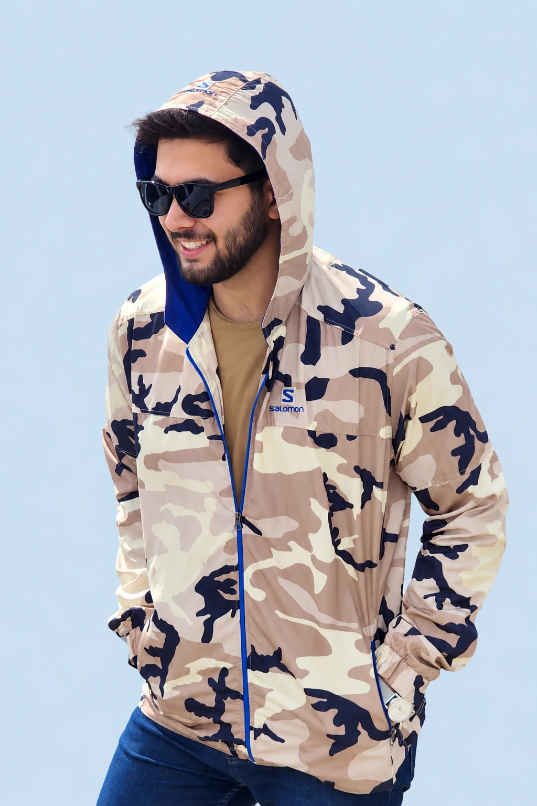

Engineeringthe future ofconnectivity.
I explore the science behind intelligent networks — turning wireless communication challenges into research, engineering solutions, and real-world impact.
reported
appointments
at Irancell Academy

Curiosity is the one thing I never learned to switch off.
I'm Mehrshad, a telecommunications engineer and researcher with a long-standing fascination for the invisible systems that connect our world. What began in control engineering evolved into a deeper focus on wireless communications, intelligent radio access networks, and applied research.
My work connects the laboratory to the field: 3G/4G/5G network configuration and optimization, telecom core infrastructure, wireless sensor systems, deep reinforcement learning, and technical project delivery.
Along the way, I've worked with telecommunications operators, contributed to research papers, and taught engineering and AI. Outside engineering, my interests have included mathematics competitions, music, water polo, and chess — curiosity rarely stays in one lane.
Read Mehrshad's full story
Before becoming an engineer, I had already built a life that could easily belong to three entirely different people, a mathematics Olympiadist, a skilled guitarist and cajón player with a strong track record, and a competitive water polo athlete. Looking back, my career didn't become complicated; it simply continued a long-standing tradition of excelling at entirely different things, often for no apparent reason other than genuine curiosity and an inability to sit still. Btw, I'm Mehrshad Eskandarpour, a Wireless Communications Engineer who somehow turned a fascination with invisible electromagnetic waves into an entire personality, a research career, and a concerning inability to leave technical problems alone. My journey began in Control Engineering, but after just one semester of getting lost in block diagram feedback loops, realizing that no combination of PID gains could stabilize me on that path, before all of my poles migrate into the right half-plane, I discovered that the unpredictable world of wireless communications, where signals battle interference, fading, and the laws of physics, offered exactly the kind of challenges I actually wanted to solve. So I switched to Telecommunications at Iran University of Science and Technology (IUST), scoring 22.5 out of 20 in Signals and Systems and 21.6 out of 20 in Electromagnetics probably had something to do with it, too. Four years later, I had authored and co-authored 11 research papers, earned the unofficial title of "the student with the most papers," and completed 27 teaching assistantships across 8 courses, collaborating with more than 10 professors and serving as Head TA for most of them. From wireless networks and 5G to reinforcement learning, cryptography, and AI, I collected research interests like Pokémon, although Pokémon would probably have been cheaper and significantly better for my sleep schedule. And because being a student, researcher, and teaching assistant simultaneously wasn't quite enough, I decided to get my hands dirty in the real world. I started with an internship at the Telecommunication Company of Iran (TCI), where I learned the fundamentals of network cores and switching before joining Irancell Labs. At MTN Irancell, I worked on 3G, 4G, and 5G network configurations across four major regions of Iran, keeping networks operational and investigating alarms that seemed personally determined to ruin my peace. I'm currently working at MCI (Mobile Communication of Iran) known as Hamrah Aval, focusing on telecommunications transmission network optimization, where I finally developed a practical understanding of strictly increasing functions: my responsibilities keep growing, while my free time approaches zero. Somewhere along the way, I also became an AI and Programming Instructor at Irancell Academy, delivering 260 hours of instruction across four classes in just three months. After years of explaining engineering concepts at IUST, teaching AI felt like a natural progression. Apparently, I'd spent so much time trying to understand complicated things that I had become professionally qualified to explain them to others. Then came another plot twist. I applied for master's programs for the 2026 intake, received an admission offer from Finland, Belguim, Italy, and decided to turn it down. Not because I suddenly lost interest in studying abroad, but because I couldn't imagine making that move without finishing some unfinished things. So, 2027 it is. There's a particular reason for that decision, but we'll get to it. Meanwhile, in August 2026, I joined FarmadCo as a Project Manager, taking responsibility for solar-powered traffic signal infrastructure, technical teams, maintenance operations, and wireless sensor projects for data centers. My research interests have also continued expanding into wireless sensor networks, radio access networks, and intelligent systems. At this point, my professional interests are growing considerably faster than my available free time, which is already approaching a mathematically concerning limit. The publications, teaching experience, hands-on engineering work, and responsibility of managing technical projects didn't happen by accident. They took years of persistence, sacrificed weekends, unreasonable ambition, and a slightly unhealthy refusal to give up when things got difficult. And no, I'm not accepting any more responsibilities, unless they're exceptionally interesting or related to chess.
Four directions.
One curiosity.
Research that meets wireless systems, intelligence, security, and efficient computing.
Wireless Networks
& RF Systems
Wireless sensor networks, RF fields, routing, energy efficiency, coverage, and resilience.
EXPLORE DIRECTION ↗ RESEARCH / 02Intelligent Radio
Access Networks
AI-assisted 5G RAN, QoS-aware mobility, reinforcement learning, and adaptive control.
EXPLORE DIRECTION ↗ RESEARCH / 03Security &
Cryptography
Side-channel analysis, cryptographic key recovery, smart contracts, and security research.
EXPLORE DIRECTION ↗ RESEARCH / 04Intelligent Learning
& Efficient AI
Neural voice conversion, memory-augmented learning, and graph-aware prompt efficiency.
EXPLORE DIRECTION ↗Selected work
& research.
Explore technical ideas and studies. Select a card to open an interactive project overview.
Skills that connect
the dots.
Technical domains, tools, and methods drawn from engineering, research, and teaching.
Networks & Telecom
Communication infrastructure and radio systems
Intelligence & AI
Adaptive learning and data-driven control
Research & Systems
Scientific investigation and real-world execution
Built in the field.
Refined in research.
From field operations to research labs, network optimization, and engineering leadership.
4G/5G Radio Access Network Optimization Engineer FULL TIME
Analyzing radio-network KPIs, coverage, capacity, configuration parameters, and service quality to identify performance issues and guide optimization strategies.
Full role description
Monitored and analyzed 4G/5G radio network performance using key performance indicators (KPIs), evaluated network configuration parameters, and identified performance issues affecting coverage, capacity, and service quality. Determined appropriate parameter adjustments and optimization strategies to improve network efficiency, reliability, and overall performance. Assessed the impact of proposed changes through continuous monitoring and performance analysis.
Project Manager CONTRACT
Coordinating traffic signal infrastructure, field teams, maintenance operations, project delivery, and wireless sensor systems for data-center monitoring.
Full role description
Managed Tehran’s municipal traffic signal infrastructure, coordinating technical teams, maintenance operations, procurement, inventory, project delivery, and stakeholder communication to keep complex systems and ideally traffic moving smoothly. Alongside this work, led the development and deployment of wireless sensor systems for data-center applications, combining field engineering, operations, and intelligent monitoring. In short: traffic lights by day, wireless sensors by… also day.
AI & Programming Instructor CONTRACT
Delivered 260 hours of practical instruction across four courses, spanning AI, machine learning fundamentals, Python, prompt engineering, and AI-assisted problem solving.
Full role description
After eight consecutive semesters of teaching programming at IUST as a Head Teaching Assistant, sometimes for two professors simultaneously, I had already become fairly comfortable explaining why the code should work when it very clearly did not. I later delivered 260 hours of AI instruction across four intensive 65-hour classes, covering Artificial Intelligence, Machine Learning, prompt engineering, AI-assisted problem solving, and Python fundamentals. My focus was on making complex ideas approachable through interactive lessons, practical exercises, real-world examples, and hands-on experimentation, teaching students not just how to use AI, but how to actually think about what it is doing.
Network Configuration Management FULL TIME
Managed Huawei 3G/4G/5G configurations across four major regions, monitoring alarms, troubleshooting incidents, integrating sites, and resolving network tickets.
Full role description
Managed Huawei 3G, 4G, and 5G network configuration across four major regions of Iran at Irancell, handling daily monitoring, alarm analysis, troubleshooting, optimization, site integration, neighboring-cell configuration and technical ticket resolution while coordinating with field and technical teams to keep the network stable and available. In practice, that meant staring at alarms until they confessed, fixing configuration issues before users noticed them, and making live network changes at hours when sensible people were asleep, all while keeping millions of connections running as if nothing had happened.
Core Network & Switching Technical Support Intern
Investigated switching, signaling, connectivity, hardware, LAN, and cabling issues in fixed-line core-network operations.
Full role description
Supported fixed-line switching operations within TCI’s telecommunications core network, diagnosing and resolving switching, signaling, connectivity, hardware, LAN, and cabling faults through system monitoring, signal analysis, and technical investigation. The role was essentially part engineering, part detective work: follow the signal, find where it disappeared, fix what broke, and restore service before anyone had time to ask why the phone was dead. It gave me hands-on exposure to core-network infrastructure, fault isolation, and real-world telecom operations, where “have you tried turning it off and on again?” is usually not an acceptable troubleshooting strategy.
Research Assistant
Researched WSNs, learning-based optimization, and 5G mobility. Undergraduate thesis explored deep reinforcement learning for QoS-aware network management under uncertainty.
Full role description
Conducted undergraduate research at IUST across Wireless Sensor Networks, Machine Learning, Reinforcement Learning, Deep Reinforcement Learning, and 5G communications, because apparently choosing just one research area would have been too easy. My thesis focused on DRL-based QoS-aware load balancing in 5G cellular networks under user mobility and uncertain channel conditions, using Python, NS-3, and mobility modeling to teach networks how to make better decisions than some humans do. Along the way, I authored and co-authored 11 research papers during my undergraduate studies, exploring AI based network optimization, wireless communications, and intelligent networking, essentially spending my bachelor’s degree turning difficult networking problems into publishable ones.
Academic foundations.
B.Sc. Electrical Engineering
Telecommunication Systems & Networks
Iran University of Science and Technology (IUST)
MBNRG · Supervisor: Dr. Hossein Soleimani
Telecom GPA: 3.6 / 4.0
Master's Studies — Wireless Communications
Plans for graduate studies in wireless communications and radio access networks, as described in the earlier portfolio. Institution and enrollment remain to be announced.
Seven academic reference letters and a separate, access-controlled application vault.
Ideas that make
it into print.
A chronological record of selected publications, from wireless networks to efficient intelligence.
Publication list reproduced from the prior portfolio. The former portfolio reports 11 research papers; 10 entries are currently listed publicly here. VIEW GOOGLE SCHOLAR ↗
Teaching &
mentorship.
27 teaching assistant appointments, organized year by year and semester by semester.
AI & Programming Instructor
Four 65-hour programs covering introductory Python, AI, machine learning, and practical problem solving.
Let's make
connections.
Have an engineering challenge, research idea, collaboration, or opportunity? Send a signal — good things start with a conversation.
mehrsh3d@gmail.com